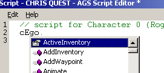

Scripting Tutorial - Part 1
In AGS, all the interactivity in the game is handled using scripts. They're an essential part of game-making, so it's important that we go through how to use them.
The Basics
Right, we'll start off by doing something very simple - displaying a message to the player when they click the "Look" icon on a hotspot. Assuming that you've done the main AGS Tutorial, you should already have created a script that looks like this:
function hSignHome_Look()
{
Display("The sign says 'EWOH'. I have no idea what that could mean.");
}Let's look at this in detail. "function" tells AGS that this is a block of script code that will run when an event occurs. "hSignHome_Look" is the name of that event. The empty parentheses ( ) tell AGS that this function takes no parameters (we'll come to them later). Finally, the curly brackets { and } define where this block of code starts and ends. Anything that you put between the { and the } will be run when this event is triggered.
Display is the name of the built-in command that we're going to run. Then, in parenthesis we put the parameters to that command. Parameters are extra pieces of information that the command needs to run -- in this case, it needs the message that we want to display.
Finally, we end the line with a semicolon. You use semicolons to tell AGS that it's the end of the command. Anything that you put after the semicolon becomes a separate command, and you'll usually do this on a new line.
It's important to mention here that lines beginning with a double-slash // are comments - AGS will ignore them, they are just there to help you remember what your script is doing. You can add comments to your script simply by starting the line with the // symbol.
Commands Explained
Each different command you can use in the script is also called a function. All the available commands are listed in the Scripting part of the manual, which also tells you how to use them.
We want to display a message to the player, so we used the Display function. Looking this up in the manual gives us the definition:
Display (string message, ...)
Displays a message to the screen. It will be displayed in
the standard message box, and centered in the middle of
the screen. (description continues...)The key point here is the part of the first line inside the parentheses. This is called the parameter list and defines what parameters you give to the function. A parameter is some information that the function uses to decide what to do.
Each parameter is listed, separated by commas, and different between functions. They can be one of the following:
string name
This parameter is a string, i.e. a piece of text. This means that for this parameter you supply text, surrounded by double-quotes. For example,"My text".
name is the name by which the parameter is referred to in the function description, it is not relevant for writing your script.int name
This parameter is an integer, i.e. a numerical value. This means that for this parameter you supply a number, for example65.CHARID
This parameter is a character script name. You need to supply the script name of one of the game characters.InventoryItem
This parameter is an inventory item. You need to supply the inventory item you want to use....
This parameter is optional, and can be of any type. You do not have to supply it at all, but if you do the function description will tell you what type of value to use.
So, we know that our Display function needs a string and an optional parameter. The description goes on to explain that the optional parameter is used for advanced things like displaying variable values, so we can ignore it for now.
To make our script call the function we write its name, then the parameters inside brackets, and finally a semicolon. This is very important, as without the semicolon the script won't compile. Also, note that we DO NOT write the parameter type (e.g. "string" or "int"). So, we can add this line to our script:
Display("The sign says 'EWOH'. I have no idea what that could mean.");This is what we already did in the main tutorial, but having examined it in more detail it should now make more sense why we've done it this way.
Instances
The AGS script language is object-based. What this means is that many commands are operated on something in the game. You should not confuse object-based with room objects, they are entirely different things. There is a script instance for each character in the game, each object in the room, each hotspot, and so on.
The name by which you access an instance in the script is given in the editor as the item's Script Name. For example, assuming our main character's script name is cEgo, then his instance name will be cEgo.
To perform a command on something, you type its Script Name followed by a dot, followed by the command name. When you type the dot, the AGS Editor will automatically pop up a list of the available commands:

You then choose the appropriate command, and place any parameters in brackets, like we did above with the Display command. For example:
cEgo.AddInventory(iKey);This will add the Key to the EGO character's inventory. If you look up AddInventory in the manual, you'll find it takes two parameters, an InventoryItem and an optional int. The InventoryItem means that you need to supply the Script Name of the inventory item; this is something you can set in the script editor.
The optional int means that there is an extra parameter which you can supply if you want to, but you don't have to. In this case it allows you to specify where in the character's inventory list the new item should be added, but we're not concerned with that right now.
As well as all the individual character instances such as cEgo, there is a special instance called player. This always corresponds to the current player character, so if you just want to perform a command on the player character (especially useful in games where the player can control different characters) then you can use the player instance to do so.
Command Sequences
Suppose we want the player to be given a pink poster when they look at the hotspot, as well as displaying the message. Assuming we have an inventory item set up to be the poster with the Script Name of iPoster, the script enables us to easily make this happen.
Our final script will look like this:
Display("The sign says 'EWOH'. I have no idea what that could mean.");
cEgo.AddInventory(iPoster);Note that the script system is case sensitive, so writing for example addinventory(iposter); will not work.
The script commands are processed from top to bottom in the order that you write them, so writing something like:
Display("Why did the chicken cross the road?");
Display("Because he was bored.");will mean that the player gets the two messages in the order you specified.
Recap
So, did you remember these vital points:
- Strings are surrounded by double-quote marks.
- Semicolon after the closing bracket on each line.
- The script is case sensitive.
- To use an instance-based command, type the Script Name followed by a dot, followed by the command name.
- The player instance corresponds to the current player character.
Variables
Scripts in AGS can use variables. A variable is an area of memory storage that contains a value, which you can check and change with your script.
To declare a variable, you write the variable type, followed by the variable name, then a semicolon. The type is either "int", "String" (note the capital S) or "float", and the name can be anything you like - it is what you will use to refer to it later. For example:
int myCounter;The variable name can only contain letters A-Z, a-z and the underscore _ character.
You need to declare a variable before you can use it, so that the compiler can spot any mistakes and knows what type of things you can store in it.
Initially, your variable will have the value 0. Optionally, you can set the starting value within the declaration, like this:
int myCounter = 5;which would set it to contain the value 5 initially instead.
Variable Scope
An unfortunate side effect of the script's attempt to emulate the 'C' language is variable scope. In short, this means that you need to place your variable definitions OUTSIDE all the event handlers, otherwise their values will keep getting reset.
So, to declare a variable for use by one of the room interaction scripts, you need to place the definition above the main function body. So, it should look something like this:
// room script file
int myCounter;
//...(other event scripts)
function hSignHome_Look()
{
Display("The sign says 'EWOH'. I have no idea what that could mean.");
}
//...(rest of file follows)No script commands can be used outside functions (or AGS wouldn't know when to run them!) - only variable declarations are allowed there.
Changing variables
You can change the value of a variable very easily in the script - simply write the variable name, the equals sign, then the new value, followed by the semicolon. So:
myCounter = 10;will change the value of our variable to be 10.
You can add to and subtract from a variable using the += and -= operators. So, to add 3 to the current value of myCounter, do the following:
myCounter += 3;Checking variables
Obviously we need a way to find out what value our variable contains, otherwise it's useless. We do this using conditional statements, called if statements. An if statement looks like this:
if (myCounter == 5)
{
myCounter = 0;
}what this means is that if myCounter contains the value 5, then the script inside the { } brackets will be run (which in this case changes the value of myCounter to zero).
If myCounter does not equal 5, the script inside the brackets is not run and execution carries on from after the } .
Note the double-equals in the if statement. In an "if" statement, you ALWAYS use the double-equals operator, which compares the two values. If you used a single equals it would set the value instead, which will yield some strange results.
The == is called an operator, because it performs an operation on the two values. The following basic operators are available:
| operator | description |
|---|---|
| == | compares the two values, and proceeds if they are the same |
| != | compares the two values, and proceeds if they are not the same |
| < | compares the two values, and proceeds if the left hand value is less than the right hand value |
| > | compares the two values, and proceeds if the left hand value is bigger than the right hand value |
| <= | proceeds if the left hand value is equal to or less than the right hand value |
| >= | proceeds if the left hand value is equal to or bigger than the right hand value |
Putting it into practice
Now let's do something useful with our variable. Suppose that we want to have different messages every time the player looks at the hotspot. So, the first time they look it will describe it, then if they look again they get a different message describing something in more detail. Our code will want to look something like this:
// room script file
int myCounter = 0;
function hSignHome_Look()
{
if (myCounter == 0)
{
Display("The sign says 'EWOH'. I have no idea what that could mean.");
}
if (myCounter == 1)
{
Display("Oh it says 'Home'.");
}
if (myCounter >=2)
{
Display("I guess that way leads towards my home.");
}
if (myCounter < 3)
{
myCounter += 1;
}
}myCounter starts off set to 0, so the first time this script is called it will run the first Display command, but not the others. Then, since 0 is less than 3, it will increase myCounter by 1, and since 0+1 = 1 it now holds the value 1.
Once the player has seen all the messages (myCounter == 2), it no longer increases the value so if they click again they will keep getting the final message.
Global variables made easy
Sometimes, you may want to set a variable value that can be shared between a room script and your global script. There are two ways to do this -- you can export the variable from the global script and then import it in the script header, but that's a bit advanced for this tutorial (see the article about importing and exporting variables for that). A simpler way is to use Global Variables pane in the Editor, where you may add variables of any built-in types.
Functions that return a value
When reading function descriptions in the manual, you will notice that some of them say they return a value. For example,
IsGamePaused ()
Returns 1 if the game is currently paused, or 0 otherwise.You use these much as you would use a literal value such as "9". For example, you can do:
// Put the return value into our variable
myCounter = IsGamePaused();(OR)
// Test the return value directly
if (IsGamePaused() == 0)
{
myCounter += 5;
}Be sure to remember the parenthesis () after the function name.
Common Shortcuts
The script system has a few nice shortcuts for common tasks which you will find yourself using regularly.
Firstly, the ++ and -- operators increase and decrease the variable by 1, respectively. So, the last part of our previous script could have been written:
if (myCounter < 3)
{
myCounter++;
}Also, the { } braces are only needed if you are using more than one command inside them. Since we have only one command, the "my_counter++;" line, we can remove the { } completely and just be left with:
if (myCounter < 3)
myCounter++;However, this can lead to mistakes in scripts that are hard to spot, so I would advise always using braces just to be safe.
Finally, if you want to test whether a value is zero or not, you can just write it as follows:
if (myCounter)
Display("counter is non-zero");which is equivalent to:
if (myCounter != 0)
Display("counter is non-zero");Summary
We've covered the basics, so that hopefully you can now write a script of your own. There are many more advanced features that the system can do, but this should be enough to get you started.
When you're ready, feel free to proceed to the Tutorial Chapter 2 - The Patronizing Text Returns which covers more advanced topics.
Enjoy AGS!